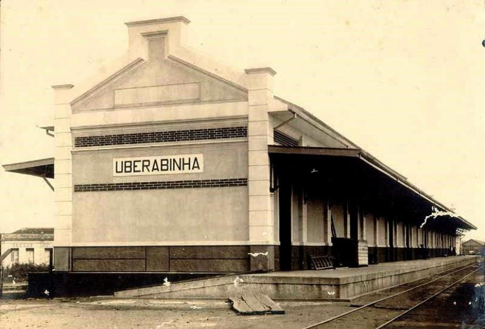
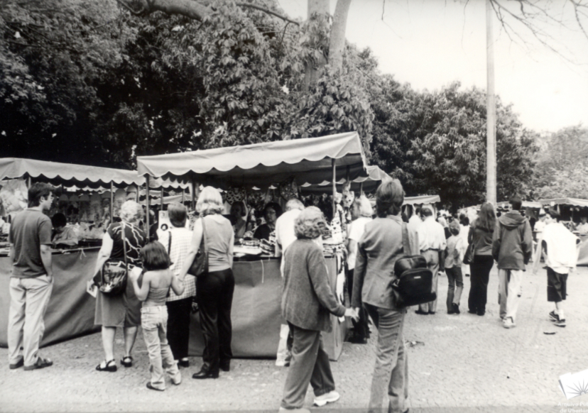
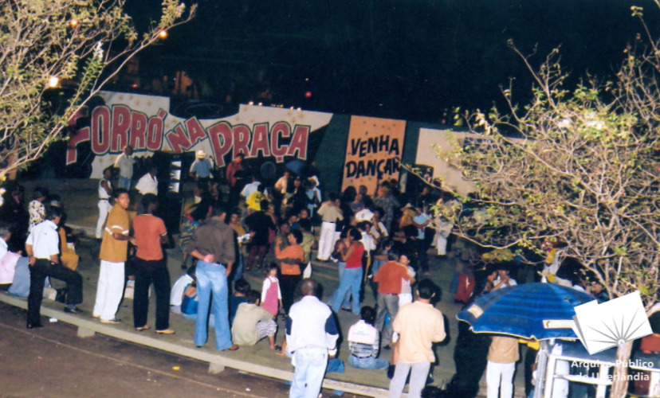
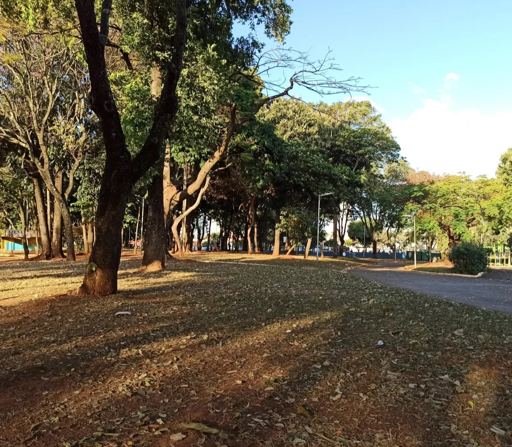
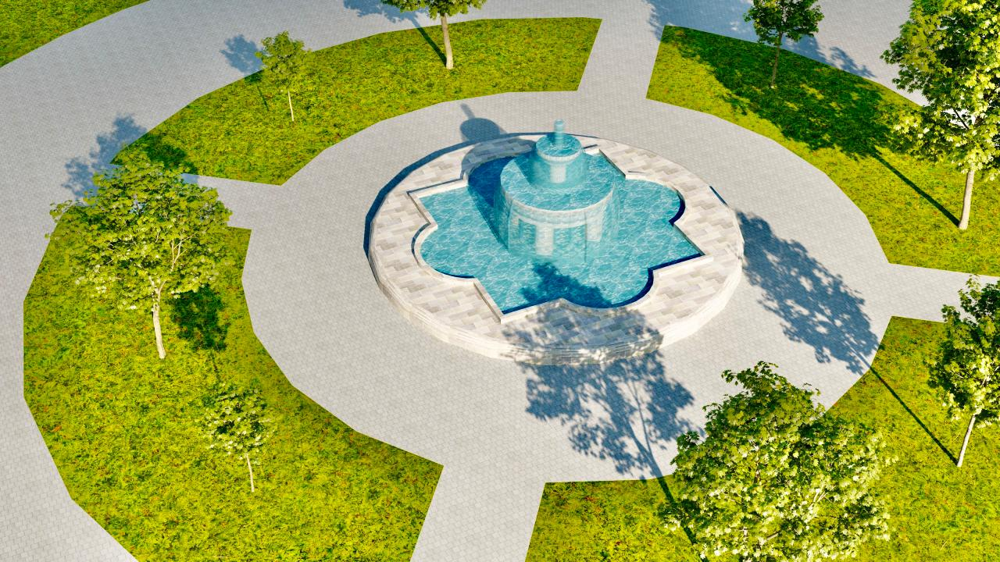
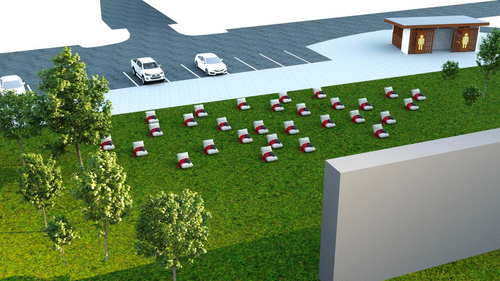

Linha do Tempo
Território ferroviário
Área servia como pátio da Estrada de Ferro Mogiana, com trilhos, galpões e intenso fluxo ferroviário.
1890


1970
Projeto da praça
Início do planejamento urbanístico que transformaria o antigo pátio ferroviário em um grande espaço público central.
Inauguração
A Praça Sérgio Pacheco é oficialmente inaugurada como uma das maiores áreas abertas do centro de Uberlândia.
1976


1980
Consolidação Cultural
Construção do teatro de arena, áreas de lazer e fortalecimento da Feira da Gente como evento fixo.
Debates e preservação
Discussões sobre a preservação dos galpões históricos e sobre o papel da praça na memória urbana.
2000


2025
Revitalizações
Melhorias de iluminação, manutenção, paisagismo e expansão de atividades culturais.

2025
Uso ativo - Atual
A praça segue como ponto de encontro, eventos, feiras e conexão de transporte, mantendo sua função central na cidade.